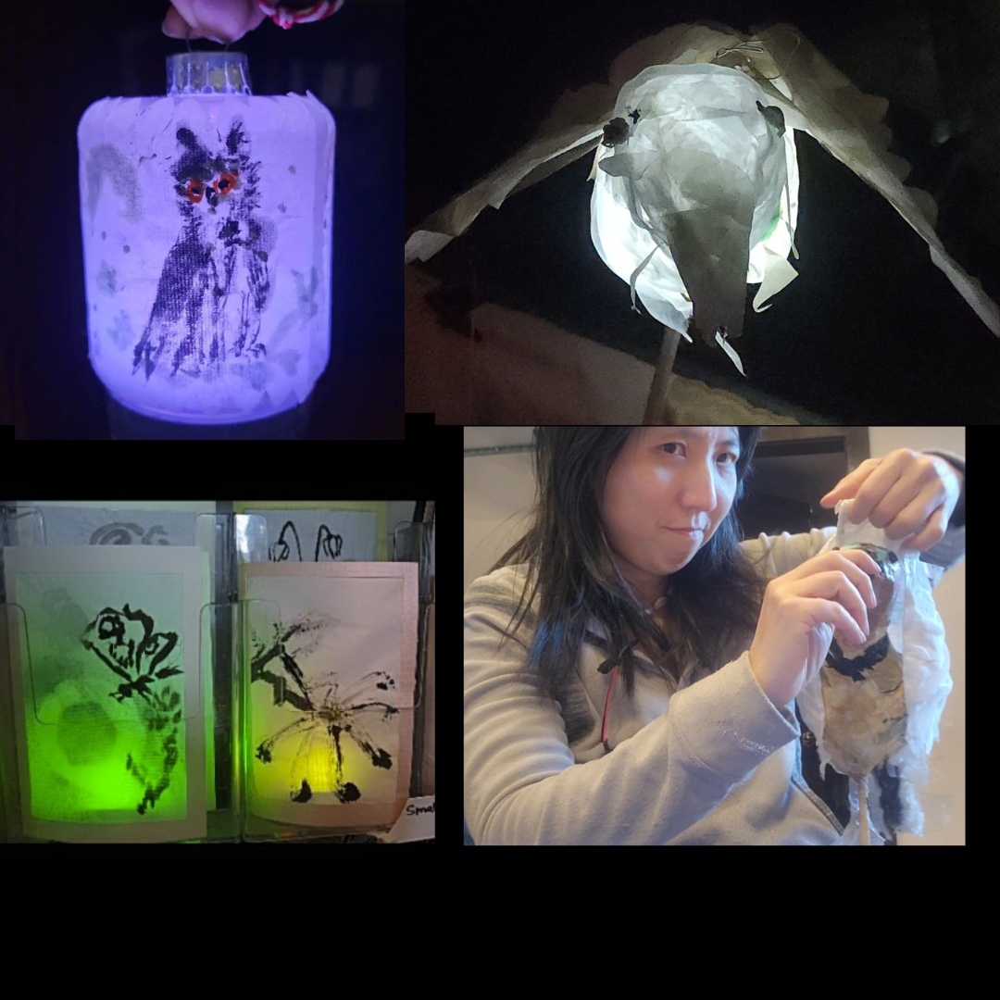
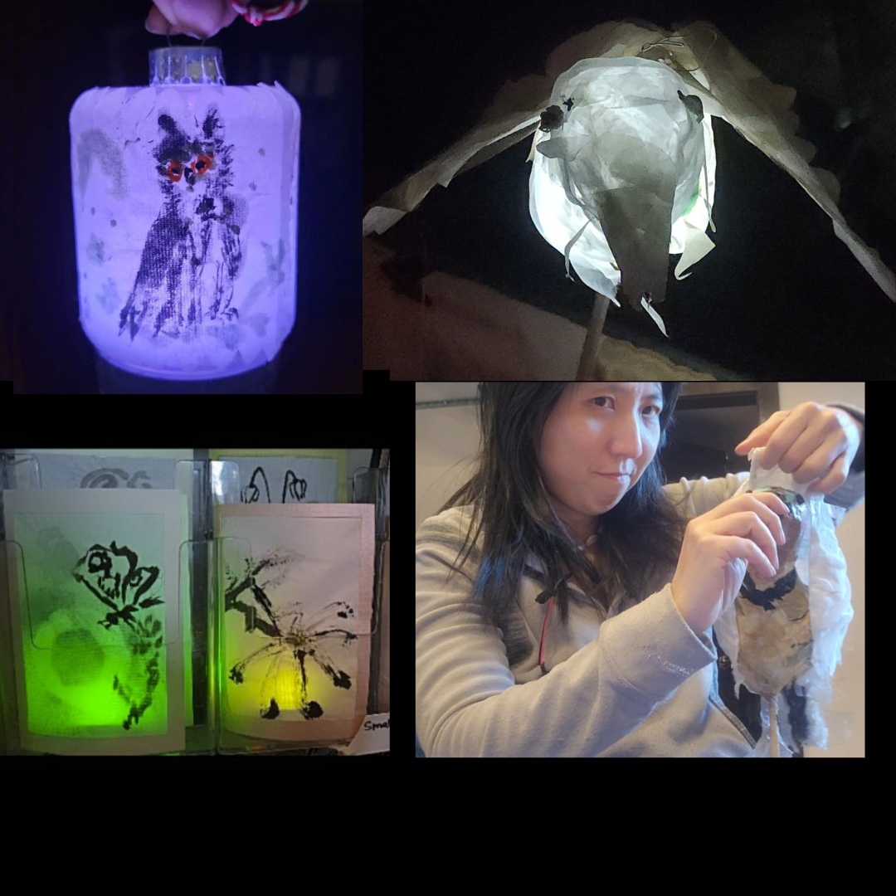

Art Jams & Studio Services
Inclusive installations and participatory workshops built on the A/I/R (Access, Inclusion, Resilience) framework.
🧪 In Development: Experimental Tactile Series
Prototyping Embroidery Fabric Teapots—fine-stitch embroidery on translucent fabrics for high tactile detail.
Request to Beta Test🖍️ Accessibility Commitment
We prioritize sensory-friendly environments, visual communication, and tactile materials. We are happy to adapt to your specific access needs.
Studio Services & Storefront Activations
 

Lantern Installations (Big & Small)
Custom lanterns for storefront windows or festivals using authentic Chinese techniques and the Cast Method.

Textile Banners & Curtains
Vivid large-scale banners used as decorative curtains, window dividers, or celebratory partitions.
💡 Collaborator & Funder Insights
Securing free venues is recommended to reduce financial burdens when material costs are involved.
As a hard-of-hearing artist, I provide venue assessments for deaf/HoH technology support.
🛠️ Technical Foundations: The 5 Essential Joints
Teaching the structural engineering of light using upcycled materials.
Training includes Flat, Cross, Hook, T, and Corner joints for intergenerational construction.
Visual Archive: Evolution of the Studio


Asian Heritage: Meditative Ink
Lightweight Sumi-e setups for minimal venue impact.